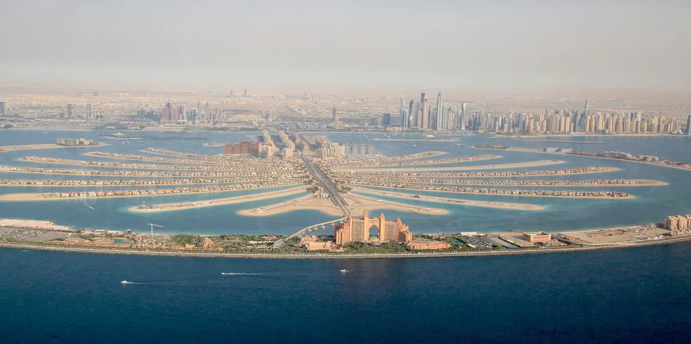
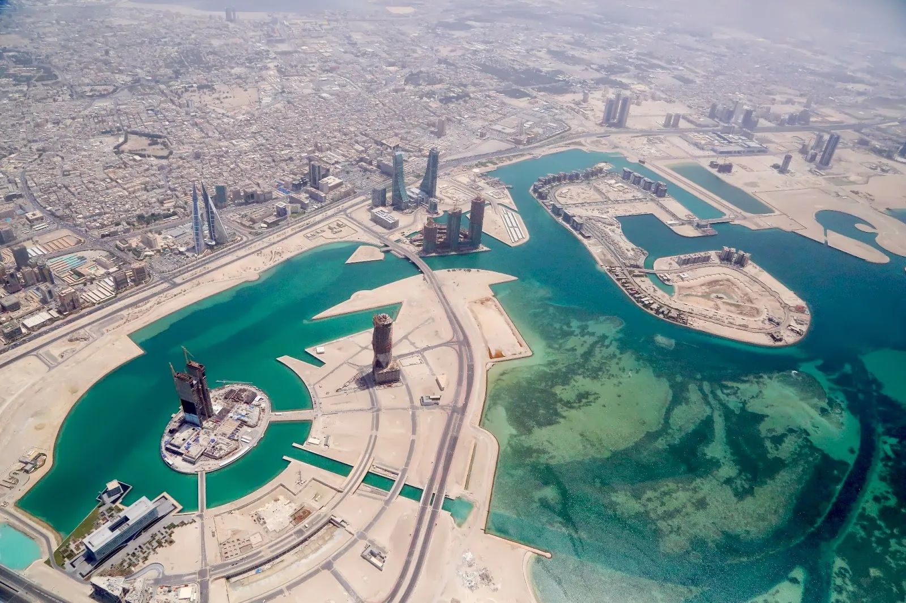
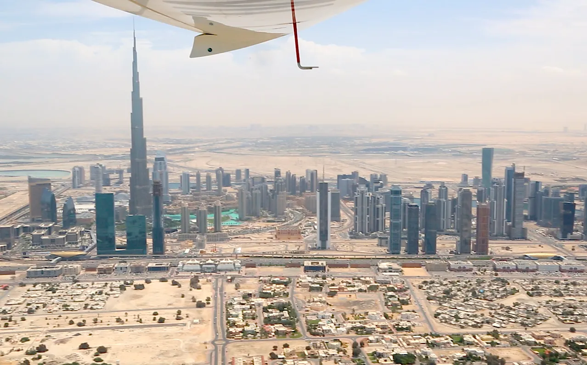

Après les Emirats arabes unis, nous continuons notre route vers l'Arabie Saoudite ! Nous survolons la plus grande tour du Monde (Burj Khalifa) ainsi que toutes ces îles artificielles, créées à main d'homme à partir de sable, dans ce qui n'était à l'origine que de l'océan... Cela ressemble à des dessins crayonnés sur une feuille blanche, les formes y sont parfois géométriques, parfois poétiques, parfois simplement farfelues.
En tout cas, la manière dont l'être humain façonne son environnement est ici fascinante !


